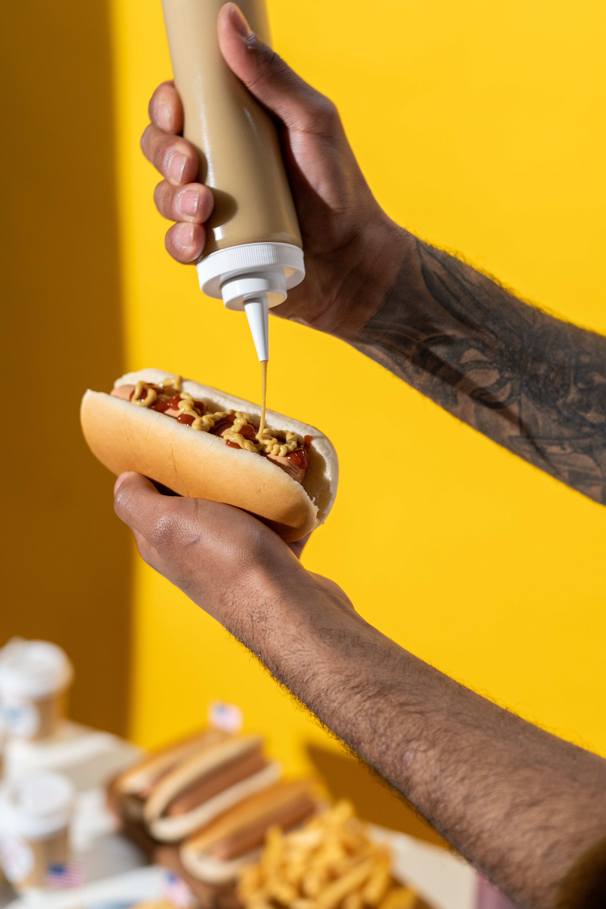
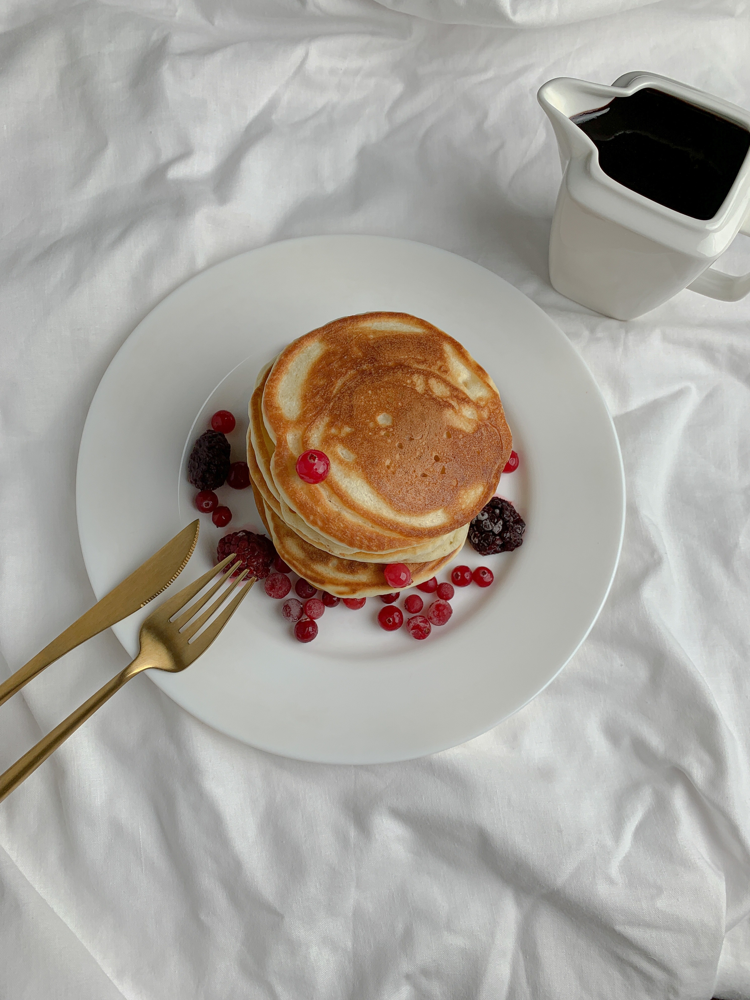

Preheat the oven to 425 degrees Fahrenheit and line a rimmed baking sheet with parchment paper. Place the butternut squash on the pan and drizzle each half with just enough olive oil to lightly coat the squash on the inside (about ½ teaspoon each). Rub the oil over the inside of the squash and sprinkle it with salt and pepper. Turn the squash face down and roast until it is tender and completely cooked through, about 40 to 50 minutes (don’t worry if the skin or flesh browns—that’s good for flavor). Set the squash aside until it’s cool enough to handle, about 10 minutes. Meanwhile, in a large soup pot, warm 1 tablespoon olive oil over medium heat until shimmering (if your blender has a soup preset, use a medium skillet to minimize dishes.) Add the chopped shallot and 1 teaspoon salt. Cook, stirring often, until the shallot has softened and is starting to turn golden on the edges, about 3 to 4 minutes. Add the garlic and cook until fragrant, about 1 minute, stirring frequently. Transfer the contents to your stand blender (see notes on how to use an immersion blender instead). Use a large spoon to scoop the butternut squash flesh into your blender. Discard the tough skin. Add the maple syrup, nutmeg and a few twists of freshly ground black pepper to the blender. Pour in 3 cups vegetable broth, being careful not to fill the container past the maximum fill line (you can work in batches if necessary, and stir in any remaining broth later). Securely fasten the lid. Blend on high (or select the soup preset, if available), being careful to avoid hot steam escaping from the lid. Stop once your soup is ultra creamy and warmed through. If you would like to thin out your soup a bit more, stir in the remaining cup of broth. Add 1 to 2 tablespoons butter or olive oil, to taste, and blend well. Taste and stir in more salt and pepper, if necessary. If your soup is piping hot from the blending process, you can pour it into serving bowls. If not, pour it back into your soup pot and warm the soup over medium heat, stirring often, until it’s nice and steamy. I like to top individual bowls with some extra black pepper.
Step 1: Cook the dog Step 2: Place dog in bun and add toppings. Step 3: Enjoy!

Pat dry – use paper towels to pat the steaks dry to get a perfect sear and reduce oil splatter. Season generously – just before cooking steaks, sprinkle both sides liberally with salt and pepper. Preheat the pan on medium and brush with oil. Using just 1/2 Tbsp oil reduces splatter. Sear steaks – add steaks and sear each side 3-4 minutes until a brown crust has formed then use tongs to turn steaks on their sides and sear edges (1 min per edge). Add butter and aromatics – melt in butter with quartered garlic cloves and rosemary sprigs. Tilt pan to spoon garlic butter over steaks and cook to your desired doneness (see chart below). Remove steak and rest 10 minutes before slicing against the grain.

Saute Aromatics – heat a non-reactive pot over medium heat. Melt in 4 Tbsp butter then sautee onions until softened and golden (10-12 min). Add minced garlic and saute another minute. Make the tomato soup base – stir in two 28 oz cans of crushed tomatoes with their juice, your chicken stock, chopped basil, sugar and black pepper. Bring to a boil then reduce heat, partially cover and simmer 10 minutes. Blend if desired – use an immersion blender in the pot or blend in batches using a blender (be careful not to overfill the blender with hot liquid) and return soup to the pot. Add cream and parmesan – stir in the heavy cream and shredded parmesan. Return to a simmer and season to taste if needed. Serve – ladle into warm bowls and garnish with more parmesan and basil. >

Mix: Mix your ingredients and pour into molds according to the popsicle you want to make: Berry Lemon: Combine all ingredients in a blender until smooth. Pour into molds. Rainbow Fruit: Distribute fruit into molds. Combine coconut water and honey, then pour into molds, tapping on the counter to remove air pockets. Berries and Cream: Puree berries until smooth (add a touch of water or juice if needed to get things moving). Stir together yogurt, honey, and vanilla. Spoon berries and yogurt into molds in alternating layers. Coconut Lime: Stir together all ingredients. Pour into molds. Sneaky Spinach: Combine all ingredients in a blender until smooth. Pour into molds. Freeze: Insert popsicle sticks and freeze until hard, at least 4 hours. Unmold: Run mold under warm water for a few seconds to loosen, then remove pops from the molds.

Start by frying your bacon. I highly recommend baking your bacon! The clean up is so much easier. Click here to learn How to Bake Bacon. When the bacon is crispy (but not TOO crispy!) take it out and remove to a paper-towel lined plate. Tear each slice of bacon in half so there are 8 strips. Keep warm until ready to assemble. While the bacon is cooking, prepare your bread. Spread both sides of your bread with butter. Place in a skillet over medium heat and toast lightly, it will only take a couple minutes. Flip each piece of bread and toast the other side. Don't overdo it! You only want a light browning. (Alternatively, you can toast your bread lightly in a toaster and then spread each side with butter). Set aside. Wash and dry your green leaf lettuce. Slice your tomato into slices that are about 3/8 inch thick. Place the tomatoes on a paper towel-lined plate so absorb some of the water. Cut your avocado in half, then slice one half into strips. Assemble your sandwich: Spread about 1 and 1/2 tablespoons mayonnaise* on your toasted bread. Top with lettuce fronds. Next add 2 tomato slices that have been sitting on a paper towel for at least a few minutes. Sprinkle your tomatoes with salt and pepper. Add all the bacon. You should have 8 half-strips of bacon. Pile 'em on! Top the bacon with avocado strips. Sprinkle with a little more salt and pepper, if you like. Spread the other piece of toasted bread with mayonnaise or whatever sauce you are using. Top the sandwich and gently press down. Use a sharp serrated knife to slice the sandwich in half. This recipe makes 1 amazing sandwich. Eat right away!
It's not hard to make homemade pancakes — you just need a good recipe. That's where we come in! You'll find the step-by-step recipe below, but here's a brief overview of what you can expect: 1. Sift the dry ingredients together. 2. Make a well, then add the wet ingredients. Stir to combine. 3. Scoop the batter onto a hot griddle or pan. 4. Cook for two to three minutes, then flip. 5. Continue cooking until brown on both sides.
-->